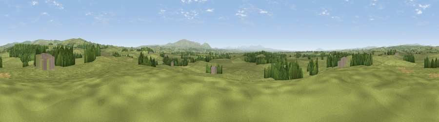

Viewpoint near Walton
#14407 in England · top 35% of its area beats it · near WaltonWhere it is
The exact computed spot (NY 52775 69725). Click the marker for map links.
The view, rendered

A 360° render of this exact spot computed from the terrain model, tree cover and land cover — summer colours, afternoon light, calibrated against photographs of famous viewpoints. Real trees, hedges and buildings will differ in detail.
The panorama
Grey silhouette: terrain skyline in each direction (720 bearings, Earth curvature and refraction included). Dashed green: skyline with trees (+15 m) and buildings (+8 m) as obstacles. Blue strip: how far the ground is visible on each bearing.
Where the view opens
Wedge length = distance to the farthest visible ground on that bearing (vegetation-aware). Rings at 10, 25 and 50 km.
What fills the view
84% grassland · 11% woodland · 3% cropland · 1% built-up
Angular shares of the visible panorama (visual magnitude), not map area. Landscape diversity 0.24 (0–1 Shannon).
Key numbers
More beautiful places nearby
The staircase of upgrades: each row has a higher view potential than everything closer. Driving times are estimates from straight-line distance, calibrated against real road routing — check an actual route before setting out.
| Place | Direction | Drive | Score |
|---|---|---|---|
| Viewpoint near Bewcastle | NE · 5 km | ~11 min | 69.2 |
| Viewpoint near Bewcastle | ENE · 5 km | ~11 min | 73.2 |
| Viewpoint near Bewcastle | NNE · 11 km | ~21 min | 78.9 |
| Viewpoint c11644_7156 | NNE · 13 km | ~25 min | 80.8 |
| Barrock Fell | SSW · 23 km | ~38 min | 81.1 |
| Viewpoint c11995_7247 | NNE · 32 km | ~49 min | 82.1 |
| Viewpoint near Bassenthwaite | SSW · 48 km | ~69 min | 82.8 |
| Skiddaw South Top | SSW · 49 km | ~70 min | 85.8 |
55.01981, -2.74014 · source: screening · position refined by local search. Computed location — check access rights before visiting.